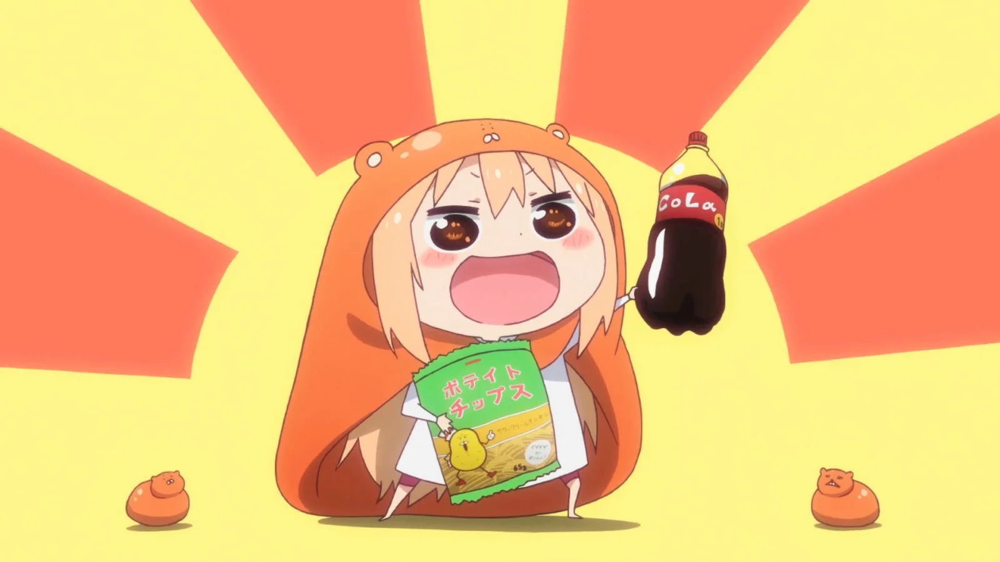
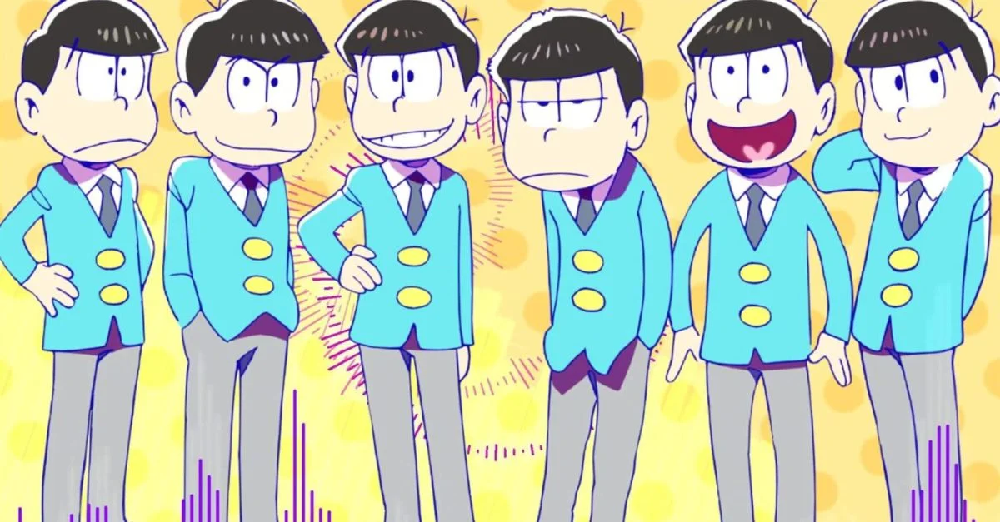

Para los que busquen pasar un buen rato, Umaru-chan es la opción idónea. Con capítulos autoconclusivos y dinámicos, Umaru proporciona horas de comedia a la vez que sus personajes se hacen, poco a poco, un hueco en nuestro corazón. Su nombre viene de Umaru, su protagonista. A primera vista parece una chica de secundaria perfecta, con un historial intachable y unas notas impecables. Sin embargo, descubrimos que al llegar a casa encoje a tamaño chibi y lo único que hace que deje de jugar a Monster Hunter es que empiece la emisión de su anime favorito.
En la misma línea que el anterior, Osomatsu-san es un anime cómico que se emitió en 2015. Se basa en los sextillizos que protagonizaban Osomatsu-kun, la serie infantil de corte cómico de los años 60. En la versión moderna los hermanos han crecdo y, cada uno con su personalidad y rasgos distintivos, son un dolor de cabeza para sus padres. Sin trabajo y sin estudios, la serie muestra como tratan de vivir la vida y, de vez en cuando, ganar algo de dinero, dando lugar a un sinfín de momentos desternillantes. Es una serie ligera y una de las mejores opciones si te gusta el humor con un toque amargo.
